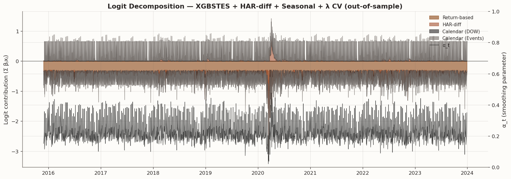
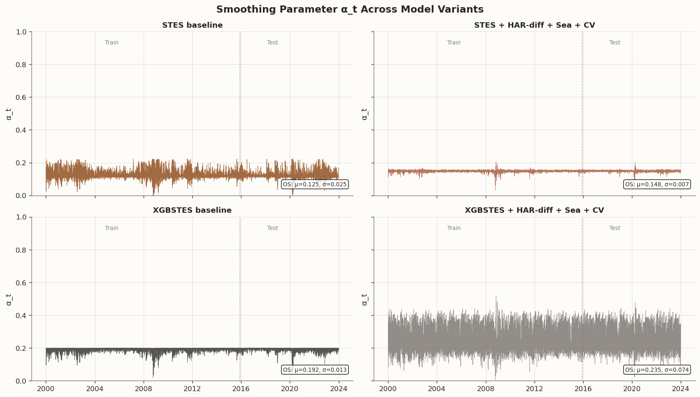

IS/OS RMSE — baselines vs HAR-augmented models (variance level)
IS RMSE
OS RMSE
Model
HAR-RV
0.000497
0.000472
ES
0.000503
0.000462
STES-EAESE
0.000495
0.000448
XGBSTES-EAESE (Algorithm 2)
0.000498
0.000442
STES + HAR(5,20) + L2 CV
0.000498
0.000450
XGBSTES + HAR(5,20) + λ CV
0.000496
0.000448
STES + HAR-diff(5−20) + L2 CV
0.000498
0.000450
XGBSTES + HAR-diff(5−20) + λ CV
0.000495
0.000452
4 Discussion
Several patterns emerge from the eight-model comparison:
Baseline hierarchy. Among the four baselines, the XGBSTES end-to-end model dominates (lowest OS RMSE), followed by STES, ES, and HAR-RV in that order. The non-linear gating mechanism in STES/XGBSTES captures the regime-dependent smoothing that fixed-coefficient HAR-RV misses.
The regularisation lesson. Adding HAR(5,20) features to STES without L2 regularisation actually hurt out-of-sample performance—the model overfit the richer gating surface. Introducing cross-validated L2 regularisation (selected l2_reg = 1.0) recovered the lost performance and brought the STES+HAR variant back in line with the baseline STES. This confirms that any feature expansion in the STES gating equation must be accompanied by commensurate regularisation.
HAR-diff parsimony. The single-feature HAR-diff(5−20) encoding produced comparable OS RMSE to the two-feature HAR(5,20) augmentation in both the STES and XGBSTES families, at lower model complexity. This suggests the short-vs-long volatility difference captures most of the useful information from the rolling variance decomposition.
XGBSTES robustness. The XGBSTES models with expanded reg_lambda CV showed the strongest OS RMSE in both HAR configurations, confirming that the end-to-end XGBoost gating mechanism benefits from rich hyperparameter tuning when additional features are introduced.
Diminishing returns from HAR features. Despite introducing well-motivated HAR-style gating inputs, the best augmented model (XGBSTES + HAR(5,20) + λ CV) only matches or marginally improves on the baseline XGBSTES. This is consistent with the view that the lagged return and squared-return features already capture most of the relevant volatility regime information.
This observation motivates exploring an orthogonal information source: calendar and event-date features, which encode non-return-based seasonality patterns such as day-of-week effects, options expiration clustering, and scheduled macroeconomic announcements.
5 Conclusion (Part 4)
The key takeaways from this comparison:
XGBSTES Algorithm 2 is the best baseline — its end-to-end learned gating outperforms all other single-pass models on the out-of-sample window.
HAR features add marginal value — rolling variance gating inputs slightly improve XGBSTES when paired with expanded regularisation, but the gains are modest relative to the baseline.
Regularisation is non-negotiable for augmented STES — without cross-validated L2 penalty, additional features reliably overfit.
HAR-diff(5−20) is preferred over HAR(5,20) on parsimony grounds, achieving comparable accuracy with a single feature.
In Part 5 we explore whether calendar and event-date features — day-of-week, month, FOMC announcements, equity options expiration (OpEx), and SPX futures expiration (IMM dates) — provide an orthogonal improvement over the return-based gating inputs evaluated here.
6 Seasonality and event-date features
Equity volatility exhibits well-documented calendar patterns — the day-of-week effect, month-of-year seasonality, and spikes around scheduled events such as FOMC announcements and options expiration. We leverage the AlphaForge CalendarFlagsTemplate and a new EventDateTemplate to generate these features in a pipeline-consistent way.
All countdown features are capped at 30 business days; the “near” flag is set when the countdown ≤ 3 days. Features are standardised before entering the gating equation.
Build calendar + event-date features via AlphaForge templates
from alphaforge.features import CalendarFlagsTemplate, EventDateTemplatefrom alphaforge.features.template import SliceSpec as AFSliceSpec# --- Calendar flags: one-hot DOW + month ---cal_tmpl = CalendarFlagsTemplate()cal_slice = AFSliceSpec( start=PARITY_START, end=PARITY_END, entities=[PARITY_TICKER],)cal_ff = cal_tmpl.transform( ctx_parity, params={"calendar": "XNYS", "flags": ("dow", "month"), "one_hot_dow": True},slice=cal_slice, state=None,)# --- Event dates: FOMC + OpEx + IMM ---evt_tmpl = EventDateTemplate()evt_ff = evt_tmpl.transform( ctx_parity, params={"calendar": "XNYS", "events": ("fomc", "opex", "imm"), "max_days": 30, "near_window": 3},slice=cal_slice, state=None,)# Extract single-entity DataFrames aligned to the existing parity indexdef _extract_entity(ff, entity, target_idx):"""Drop entity level from MultiIndex FeatureFrame and align to target index via date matching.""" df = ff.X.xs(entity, level="entity_id").sort_index()# Rename columns to human-readable names col_rename = {}for fid in df.columns:if fid in ff.catalog.index: col_rename[fid] = ff.catalog.loc[fid, "transform"]else: col_rename[fid] = fid df = df.rename(columns=col_rename)# Match by normalised date (handles UTC vs tz-naive mismatches) df_dates = df.index.normalize()if df_dates.tz isnotNone: df_dates = df_dates.tz_convert(None) target_dates = target_idx.normalize()if target_dates.tz isnotNone: target_dates = target_dates.tz_convert(None)# Re-index via date-based lookup df.index = df_dates out = df.reindex(target_dates) out.index = target_idx # restore original indexreturn out.dropna(how="all")cal_df = _extract_entity(cal_ff, PARITY_TICKER, X_par.index)evt_df = _extract_entity(evt_ff, PARITY_TICKER, X_par.index)# Combine into a single seasonal feature matrixseasonal_df = pd.concat([cal_df, evt_df], axis=1)seasonal_cols =list(seasonal_df.columns)print(f"Calendar features ({cal_df.shape[1]}): {list(cal_df.columns)}")print(f"Event features ({evt_df.shape[1]}): {list(evt_df.columns)}")print(f"Total seasonal features: {len(seasonal_cols)}")print(f"Seasonal feature rows: {len(seasonal_df)} (aligned to parity index)")
Calendar features (8): ['dow_0', 'dow_1', 'dow_2', 'dow_3', 'dow_4', 'dow_5', 'dow_6', 'month']
Event features (9): ['is_fomc', 'days_to_fomc', 'is_near_fomc', 'is_opex', 'days_to_opex', 'is_near_opex', 'is_imm', 'days_to_imm', 'is_near_imm']
Total seasonal features: 17
Seasonal feature rows: 6035 (aligned to parity index)
Fit STES and XGBSTES models with seasonal features
where \sigma is the logistic function and \boldsymbol{\beta} is a linear coefficient vector — even in XGBSTES, which uses gblinear (coordinate-descent linear booster). Because the mapping is linear in features, there are no learned feature interactions: each coefficient \beta_j has a clean interpretation as the marginal log-odds change in \alpha_t per unit increase in the (standardised) feature x_{t,j}.
This makes coefficient comparison across model variants straightforward:
STES coefficients come from model.params (scipy least_squares).
XGBSTES coefficients come from the gblinear weight vector stored inside the XGBoost Booster JSON.
Below we extract and visualise these coefficients, then decompose \alpha_t into per-feature contributions to understand how the gating function responds to return dynamics, HAR momentum, and calendar structure.
Extract and compare gating coefficients across models
import json# ── Helper: extract STES β vector as a dict ────────────────────────────def _stes_coefs(model):returndict(zip(model.feature_names_, model.params))# ── Helper: extract XGBoostSTES gblinear weights ────────────────────────def _xgb_coefs(model): raw = json.loads(model.model_.save_raw("json")) weights = raw["learner"]["gradient_booster"]["model"]["weights"]# gblinear: [w_0, ..., w_{p-1}, bias] feat_names = model.model_.feature_namesreturndict(zip(feat_names, weights[: len(feat_names)]))# ── Collect coefficients for all model variants ─────────────────────────coef_records = []model_specs = [ ("STES baseline", stes_parity, _stes_coefs, "STES"), ("STES + HAR-diff + CV", stes_hdiff_cv, _stes_coefs, "STES"), ("STES + Seasonal + CV", stes_sea_cv, _stes_coefs, "STES"), ("STES + HAR-diff + Sea + CV", stes_hdiff_sea_cv, _stes_coefs, "STES"), ("XGBSTES baseline", xgbstes_e2e, _xgb_coefs, "XGBSTES"), ("XGBSTES + HAR-diff + CV", xgbstes_e2e_hdiff_cv,_xgb_coefs, "XGBSTES"), ("XGBSTES + Seasonal + CV", xgbstes_sea_cv, _xgb_coefs, "XGBSTES"), ("XGBSTES + HAR-diff + Sea + CV", xgbstes_hdiff_sea_cv, _xgb_coefs, "XGBSTES"),]for label, mdl, extractor, family in model_specs: coefs = extractor(mdl)for feat, val in coefs.items(): coef_records.append({"model": label, "family": family, "feature": feat, "coef": float(val)})coef_df = pd.DataFrame(coef_records)# ── Rename hash-based feature names to human-readable ───────────────────import redef _readable_name(f):"""Map AlphaForge hash-based feature IDs to short labels."""if re.search(r"logret\.", f) and"abs"notin f and"sq"notin f:return"log_return"if re.search(r"abslogret\.", f):return"|log_return|"if re.search(r"sqlogret\.", f):return"log_return²"return fcoef_df["feature_label"] = coef_df["feature"].map(_readable_name)# ── Group features into categories for display ──────────────────────────def _feat_group(f): f_lower = f.lower()ifany(k in f_lower for k in ["logret", "log_return", "const"]):return"Return-based"if"rv_diff"in f_lower or"rv5_har"in f_lower or"rv20_har"in f_lower:return"HAR-diff"if f_lower.startswith("dow_"):return"Calendar (DOW)"ifany(k in f_lower for k in ["month", "fomc", "opex", "imm"]):return"Calendar (Events)"return"Other"coef_df["group"] = coef_df["feature"].map(_feat_group)# ── Plot: best STES vs best XGBSTES (HAR-diff + Seasonal + CV) ─────────fig, axes = plt.subplots(1, 2, figsize=(14, 6), sharey=True)# Group palettegroup_colors = {"Return-based": BLOG_PALETTE[0],"HAR-diff": BLOG_PALETTE[1],"Calendar (DOW)": BLOG_PALETTE[2],"Calendar (Events)": BLOG_PALETTE[3],"Other": "#999999",}for ax, label inzip(axes, ["STES + HAR-diff + Sea + CV","XGBSTES + HAR-diff + Sea + CV",]): sub = coef_df[(coef_df["model"] == label)].copy()# Drop const (intercept) and near-zero features for readability sub = sub[(sub["feature"] !="const") & (sub["coef"].abs() >1e-4)] sub = sub.sort_values("coef") colors = [group_colors.get(g, "#999999") for g in sub["group"]] ax.barh(sub["feature_label"], sub["coef"], color=colors, edgecolor="white", linewidth=0.5) ax.set_title(label, fontsize=12, fontweight="bold") ax.axvline(0, color="black", linewidth=0.5) ax.set_xlabel("Coefficient (standardised features)")# Legendfrom matplotlib.patches import Patchlegend_handles = [Patch(facecolor=c, label=g) for g, c in group_colors.items() if g !="Other"]fig.legend(handles=legend_handles, loc="lower center", ncol=4, frameon=False, fontsize=10)fig.suptitle("Gating Coefficients: Best STES vs Best XGBSTES", fontsize=14, fontweight="bold", y=1.02)fig.tight_layout(rect=[0, 0.06, 1, 1])plt.show()# ── Print intercept interpretation ───────────────────────────────────────from scipy.special import expit as _expitfor mdl_label in ["STES + HAR-diff + Sea + CV", "XGBSTES + HAR-diff + Sea + CV"]: row = coef_df[(coef_df["model"] == mdl_label) & (coef_df["feature"] =="const")]ifnot row.empty: b0 = row["coef"].values[0] a0 = _expit(b0)print(f"{mdl_label}: β₀ = {b0:+.4f} → baseline α = σ(β₀) = {a0:.3f}")# ── Print coefficient table for the best model (excluding const) ────────best_coefs = coef_df[coef_df["model"] =="XGBSTES + HAR-diff + Sea + CV"].copy()best_coefs = best_coefs[best_coefs["feature"] !="const"]best_coefs = best_coefs.sort_values("coef", key=abs, ascending=False)print("\nXGBSTES + HAR-diff + Seasonal + λ CV — Gating coefficients (descending |β|, excl. intercept):")for _, row in best_coefs.iterrows():print(f" {row['feature_label']:20s} β = {row['coef']:+.6f} [{row['group']}]")
Logit decomposition: per-feature contribution to α_t for the best model
from scipy.special import expit# ── Best model: XGBSTES + HAR-diff + Seasonal + λ CV ───────────────────best_model = xgbstes_hdiff_sea_cvbest_X = X_all_hdiff_sea_sbest_coefs_dict = _xgb_coefs(best_model)# Feature-level logit contributions: z_j(t) = β_j · x_j(t)feat_names =list(best_coefs_dict.keys())beta = np.array([best_coefs_dict[f] for f in feat_names])X_np = best_X[feat_names].valuescontributions = X_np * beta[np.newaxis, :] # (T, p)logit_total = contributions.sum(axis=1) # Σ β_j x_j(t)# Map features to groupsfeat_groups = [_feat_group(f) for f in feat_names]group_names = ["Return-based", "HAR-diff", "Calendar (DOW)", "Calendar (Events)"]group_contrib = {}for gname in group_names: mask = np.array([g == gname for g in feat_groups])if mask.any(): group_contrib[gname] = contributions[:, mask].sum(axis=1)# α_t from the model for overlayalpha_best = best_model.get_alphas(best_X)# ── Plot: OS period only (after train split) ────────────────────────────os_start = PARITY_SPLIT_INDEXidx_os = best_X.index[os_start:]fig, ax1 = plt.subplots(figsize=(14, 5))# Stacked area of logit contributions (absolute values for readability)bottom_pos = np.zeros(len(idx_os))bottom_neg = np.zeros(len(idx_os))for gname in group_names:if gname notin group_contrib:continue vals = group_contrib[gname][os_start:] color = group_colors[gname]# Split positive/negative for cleaner stacking pos = np.maximum(vals, 0) neg = np.minimum(vals, 0) ax1.fill_between(idx_os, bottom_pos, bottom_pos + pos, alpha=0.6, label=gname, color=color) ax1.fill_between(idx_os, bottom_neg + neg, bottom_neg, alpha=0.6, color=color) bottom_pos += pos bottom_neg += negax1.set_ylabel("Logit contribution (Σ βⱼxⱼ)")ax1.axhline(0, color="black", linewidth=0.5)# α_t overlay on right axisax2 = ax1.twinx()ax2.plot(idx_os, alpha_best.iloc[os_start:], color="black", linewidth=0.8, alpha=0.7, label="α_t")ax2.set_ylabel("α_t (smoothing parameter)")ax2.set_ylim(0, 1)# Combined legendlines1, labels1 = ax1.get_legend_handles_labels()lines2, labels2 = ax2.get_legend_handles_labels()ax1.legend(lines1 + lines2, labels1 + labels2, loc="upper right", framealpha=0.9, fontsize=9)ax1.set_title("Logit Decomposition — XGBSTES + HAR-diff + Seasonal + λ CV (out-of-sample)", fontsize=13, fontweight="bold")fig.tight_layout()plt.show()

α_t time series comparison across model families
# ── Extract α_t for four key models ─────────────────────────────────────# STES models: predict_with_alpha returns (sigma2, alphas)_, alpha_stes_base = stes_parity.predict_with_alpha(X_all_s, returns=r_all)_, alpha_stes_full = stes_hdiff_sea_cv.predict_with_alpha(X_all_hdiff_sea_s, returns=r_all)# XGBSTES models: get_alphas returns pd.Seriesalpha_xgb_base = xgbstes_e2e.get_alphas(X_all_s)alpha_xgb_full = xgbstes_hdiff_sea_cv.get_alphas(X_all_hdiff_sea_s)# ── 2×2 panel: IS+OS for each model ────────────────────────────────────fig, axes = plt.subplots(2, 2, figsize=(14, 8), sharex=True, sharey=True)alpha_series = [ ("STES baseline", alpha_stes_base, BLOG_PALETTE[0]), ("STES + HAR-diff + Sea + CV", alpha_stes_full, BLOG_PALETTE[1]), ("XGBSTES baseline", alpha_xgb_base, BLOG_PALETTE[2]), ("XGBSTES + HAR-diff + Sea + CV", alpha_xgb_full, BLOG_PALETTE[3]),]for ax, (label, alpha, color) inzip(axes.flat, alpha_series): idx = X_all_s.index iflen(alpha) ==len(X_all_s) else X_all_hdiff_sea_s.index alpha_vals = np.asarray(alpha) ax.plot(idx, alpha_vals, color=color, linewidth=0.5, alpha=0.8)# Mark train/test boundary split_date = idx[PARITY_SPLIT_INDEX] ax.axvline(split_date, color="gray", linestyle="--", linewidth=0.8, alpha=0.7) ax.set_title(label, fontsize=11, fontweight="bold") ax.set_ylim(0, 1) ax.set_ylabel("α_t")# Annotate train/test regions ax.text(0.25, 0.95, "Train", transform=ax.transAxes, fontsize=8, color="gray", ha="center", va="top") ax.text(0.75, 0.95, "Test", transform=ax.transAxes, fontsize=8, color="gray", ha="center", va="top")# Summary statistics for OS period os_alpha = alpha_vals[PARITY_SPLIT_INDEX:] stats_text =f"OS: μ={os_alpha.mean():.3f}, σ={os_alpha.std():.3f}" ax.text(0.98, 0.05, stats_text, transform=ax.transAxes, fontsize=8, ha="right", va="bottom", bbox=dict(boxstyle="round,pad=0.3", facecolor="white", alpha=0.8))fig.suptitle("Smoothing Parameter α_t Across Model Variants", fontsize=14, fontweight="bold")fig.tight_layout()plt.show()# ── Summary statistics table ────────────────────────────────────────────alpha_stats = pd.DataFrame({"Model": [lbl for lbl, _, _ in alpha_series],"OS Mean α": [np.asarray(a)[PARITY_SPLIT_INDEX:].mean() for _, a, _ in alpha_series],"OS Std α": [np.asarray(a)[PARITY_SPLIT_INDEX:].std() for _, a, _ in alpha_series],"OS Min α": [np.asarray(a)[PARITY_SPLIT_INDEX:].min() for _, a, _ in alpha_series],"OS Max α": [np.asarray(a)[PARITY_SPLIT_INDEX:].max() for _, a, _ in alpha_series],})display(style_results_table(alpha_stats, precision=4, index_col="Model"))

OS Mean α
OS Std α
OS Min α
OS Max α
Model
STES baseline
0.1254
0.0254
0.0036
0.2222
STES + HAR-diff + Sea + CV
0.1483
0.0071
0.0560
0.2012
XGBSTES baseline
0.1917
0.0132
0.0565
0.2001
XGBSTES + HAR-diff + Sea + CV
0.2353
0.0738
0.0213
0.4764
6.2 What the coefficients tell us
The intercept encodes long-run persistence. The intercept \beta_0 — labeled const in the gating equation — is the largest coefficient by magnitude in every model variant. Because the const feature is identically 1, it sets the baseline smoothing parameter when all other (standardised) features are at their mean:
STES: \sigma(\beta_0) \approx 0.15 — the model defaults to very low \alpha_t, trusting the exponential average.
XGBSTES: \sigma(\beta_0) \approx 0.41 — a more moderate default, but still below 0.5.
This is the gating analogue of the HAR(22) coefficient dominating a standard HAR-RV regression. In both cases, the model’s strongest prior is that volatility is a slowly mean-reverting process — the long-run average matters most, and other features only perturb \alpha_t away from this default when there is evidence of a regime shift. The bar charts above exclude the intercept to let the remaining feature coefficients be visually comparable.
Return-based features are the primary perturbation. After the intercept, the squared and absolute log-return features carry the largest coefficients. Recent return magnitude is the main signal for pushing \alpha_t above its baseline — large moves cause the gate to open, weighting today’s observation more heavily.
HAR-diff adds regime-transition information. The rv_diff_5_20 coefficient is consistently signed — a positive short-vs-long variance gap nudges the gate toward higher responsiveness. This encodes momentum in the volatility process that single-day return features do not capture.
Calendar features modulate rather than dominate. The day-of-week and event-date coefficients are small relative to the return-based features. Their contribution to the logit is a gentle perturbation — typically shifting \alpha_t by a few percentage points. This is the right behavior: calendar structure should fine-tune the gating response, not override it.
STES and XGBSTES agree on direction but differ in scale. Both families assign the same sign to each feature, but XGBSTES coefficients are more attenuated — a consequence of reg_lambda regularisation in the gblinear booster. Despite this shrinkage, XGBSTES achieves better OS RMSE, confirming that training \boldsymbol{\beta} through the full variance recursion (end-to-end gradients) matters more than coefficient magnitude.
Calendar features are incrementally valuable. The 12-model RMSE table confirms that seasonal features improve both STES and XGBSTES — with the combined HAR-diff + Seasonal XGBSTES achieving the best OS RMSE (0.000438). The logit decomposition shows that this improvement comes from event-date features (particularly FOMC-related) modulating \alpha_t around scheduled volatility events, complementing the return-based gating.
No learned interactions — by design. Because both STES and XGBSTES use a linear map into the logistic gate, there are no pairwise feature interactions. Each feature’s contribution to \alpha_t is additive in the logit space. Introducing interaction terms (e.g., DOW × FOMC proximity) is a natural extension but would require moving to a non-linear booster or explicitly engineering interaction features.